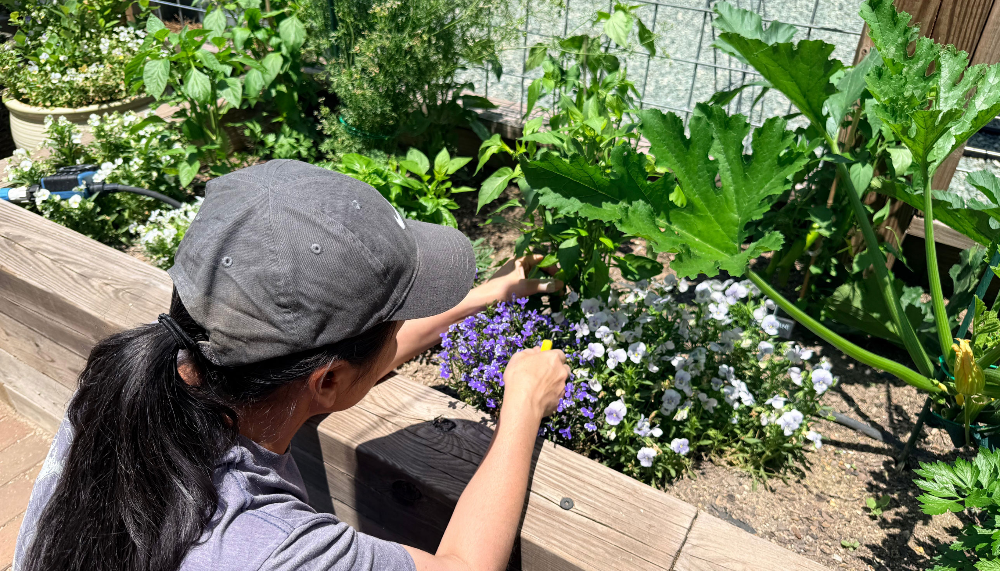

About Me
My name is Deanna, and I help companies reimagine their identities and craft stories worth hearing. But my obsession with detail doesn’t stop at the artboard.
When the screen goes dark, I can be found in the garden losing track of time, or in the kitchen tackling a new culinary challenge. Most recently, I’ve been revisiting a chocolate chip cookie recipe I spent a decade perfecting, tweaking the hydration levels to ensure they stay soft for days (though, truth be told, they rarely last more than 24 hours in my house).
Is it possible to be too invested in the sugar-to-butter ratio of a cookie? Probably. But that same relentless pursuit of “just right” is exactly what I bring to every project. If you’re interested in collaborating or would like to see my latest work, I’d love to hear from you.
Send me an email.(Photo of me at age 7)
